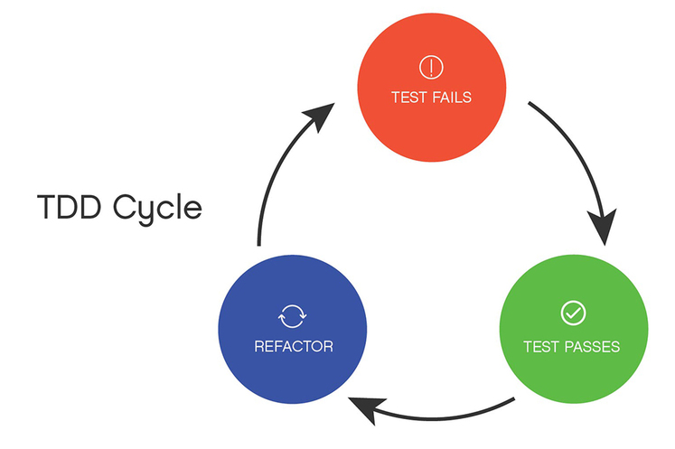
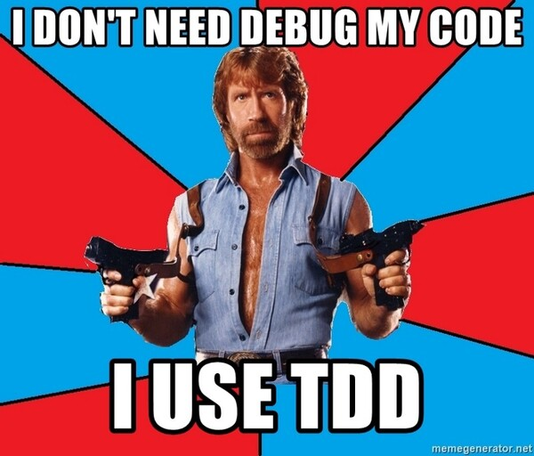

Chap 6 : Test-Driven Development
M4104 - PEL : Agilité et bonnes pratiques de programmation
Institut Universitaire de Technologie de Bayonne et du Pays Basque
Robin Lucbernet - Christophe Marquesuzaà - Damien Urruty
DUT Informatique 2021 / 2022 - Semestre 4
Origines
- Test-Driven Development (TDD) = Développement dirigé par les tests
- Technique associée au mouvement eXtreme Programming (XP)
- Popularisée par Kent Beck (encore lui) dans les années 2000

Test After : constat
- Dans beaucoup d'entreprises on considère que le rôle du développeur est de développer...
- ... et le rôle du testeur est de tester (bien souvent après donc)
- Développement et validation sont souvent décorrélés
- eXtreme Programming incite à rapprocher les tests du développement, et pousse une approche "test-first"
Test After : constat
- Habituellement on écrit les tests après le code...
- ... si on y pense...
- ... si on a le temps...
- ... et ils sont bien souvent incomplets
- De plus un défaut détecté tardivement coûte plus cher à corriger
Test After : constat
- Un défaut détecté tardivement coûte plus cher à corriger :
- il faut arrêter ce qu'on est en train de faire
- se remettre dans le contexte
Test-Driven Development
- Cycle itératif de développement
- On fonctionne par "baby steps" (pas de bébé)
- Chaque test est écrit avant le bout de code qu'il est sensé tester
La boucle du TDD
Etape 1 - Red
Ecrire un test qui échoue
- Il est important de le faire échouer pour s'assurer que le message d'échec est correct
- On écrit un seul test à cette étape
- Important ! On n'écrit aucune ligne de code de production à cette étape (sauf le minimum pour passer la compilation)
Etape 2 - Green
Faire passer le test
- Un test qui échoue est une situation inconfortable...
- ... alors on le fait passer au vert le plus vite possible...
- ... c'est-à-dire avec le code le plus minimal possible (même moche !)
Etape 3 - Blue (en option)
Refactor
- Une fois au vert, on peut prendre le temps de faire du refactoring
- Cette étape n'est pas obligatoire
- Il est même recommandé d'attendre d'avoir suffisamment de tests pour faire le bon refactoring
- Comme d'habitude, refactoring veut dire que l'on ne touche pas au fonctionnel
Etape 0 - Think
- Bien comprendre le besoin et les différents scénarios
- Etablir une liste de tests associés à ces scénarios
- Le TDD est compatible avec une conception (souvent légère) en amont
Apports du TDD
Couverture de code
- Si l'on suit rigoureusement le cycle on obtient automatiquement une couverture maximale
- Chaque branche de code est normalement couverte par un test dédié
Documentation
- Les tests servent de documentation pour le module testé
- Chaque scénario/comportement est représenté par un test
- Il est donc important de bien nommer les tests
Confiance
- Voir les tests passer au vert donne confiance dans ce que l'on développe
- L'accumulation des tests permet d'estimer l'avancement
Code fonctionnel à chaque étape
- A la fin de chaque boucle on a du code qui fonctionne et qui correspond à de vrais cas d'usage
- Cela permet de montrer des choses au client, même incomplètes
Conception de qualité
- Les tests mettent une pression continue sur la conception
- Ils obligent à penser à l'interface (API) du module testé : on doit en effet utiliser le module avant même de l'avoir implémenté
- Ils mènent à du code plus modulaire, flexible
- S'il est compliqué/long d'écrire un test, c'est probablement que la conception est perfectible
- Il faut donc "écouter" les tests : ce sont eux qui disent si le design est bon
Non-régression
- Tous les tests accumulés lors des différents cycles constituent un harnais de sécurité
Débogage diminué
- L'approche TDD diminue en général le besoin d'utiliser le débogueur
- Si un bug est découvert, on démarre un nouveau cycle : écrire un test qui échoue, corriger le bug, puis refactor si besoin
Attention !
- Faire du Test-Driven Development nécessite beaucoup de pratique pour acquérir de la maitrise
- Peuvent aider : coding dojos, katas, programmation en binome...
- Requiert une certaine discipline pour respecter le cycle
Exercice pratique : Roman Numerals Kata
http://codingdojo.org/kata/RomanNumerals/- Convertir un nombre romain en nombre "normal"
- Et vice-versa